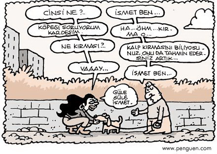

Döngüler ve Kararlar#
Ders Notları: 4#
Döngüler ve Kararlar
Giriş
Bloklar
Döngüler
for döngüsü
Döngü içinde döngü
Kararlar (if)
break (kırma)
continue (devam et)
Döngü + Karar (while)
Dr. Emre S. Taşcı, emre.tasci@hacettepe.edu.tr
Fizik Mühendisliği Bölümü
Hacettepe Üniversitesi
Giriş#
Bilgisayarların en iyi yaptığı işlerin başında aynı şeyi tekrar tekrar yapmak gelir. Bilgisayarların en iyi yaptığı işlerin başında aynı şeyi tekrar tekrar yapmak gelir. Şikayet etmezler, sabırlıdırlar, sıkılmazlar: dilerseniz her seferinde birazcık değiştire değiştire kuantum seviyelerini bile hesaplarlar. Ezop’un tavşanı yarışta yenen kaplumbağası gibi azimleriyle bizi yeniyorlar (Tavla: 1979; Dama: 2007; Satranç: 1997; Go: 2016; Texas Hold’em Poker: 2019; Starcraft: 2019).
Bilgisayar & programlama kavramının babalarından Edsger W. Dijkstra’nın meşhur bir lafı vardır: “Bilgisayarların düşünme yeteneğini sorgulamak, denizaltıların yüzme yeteneğini sorgulamak kadar abes bir iştir.”, buna diğer babalardan Turing’in -felsefi alemde- verdiği cevap da işleri daha karıştırmıyor değil. Ama Turgut Uyar’ın “Kayayı Delen İncir”i, ya da Shao-Lin tapınağının göçük yerleri (bkz. Şekil A) azmin ve kararlılığın sonuçlarına işaret ediyor (“Delilik, aynı şeyi tekrar tekrar yapıp farklı sonuçlar beklemektir.” diyen Einstein’a bakmayın siz ;).
“Şekil A: Shao-lin tapınağında yılların zıplamasıyla göçmüş yerler” [Kaynak]
Programlamanın olmazsa olmazı döngüler konusuna gelmek için bu kadar zaman bekledik zira üzerinden döneceğimiz şey olan dizileri iyice anlamamız gerekiyor. Standard bir döngü (for döngüsü) iki “şey” üzerinden tanımlanır: döngü değişkeni ve değerler kümesi. Döngünün her turunda döngü değişkenimiz, sırayla değerler kümesinden bir elemanı kendisine değer olarak alır.
Bloklar#
Eski dillerde değerler kümesi sadece sayılardan (bir aralıktan) ibaret oluyordu fakat günümüzde pek çok dil (Python da buna dahil), herhangi bir küme üzerinden “tekrarlama” (iteration) yapabilmektedir.
Programımızda hangi bölgelerin tekrara dahil olduğunu “blok” adını verdiğimiz bölgelerle tanımlıyoruz. Yine tarih dersimize dönersek: eski dillerde bu bölgelerin bitişi, başlangıçta tanımlanan satır numarasıyla belirleniyordu; sonrasında hangi yönergeyle başlattıysak, onun “anti-“siyle (FOR ise: ENDFOR; WHILE ise: ENDWHILE; IF ise: ENDIF… gibi) bitirme şekliyle belirlendi, daha sonra bloklar “{}” şeklinde süslü parantezlerle (“braces”) işaretlendi. Zira hemen her program dilinde, satırlara istediğiniz yerden başlıyordunuz, boşluklar ya da sekmeler sizin programınızı kolay anlaşılır kılabilmeniz için serbest kılınmıştı. Python ise ilk günden radikal bir kararla bu blokların sınırlarını çizdi: Aynı girdi boşluğuna (indent) sahip sıralı satırlar, aynı bloğa dahildir. Dahası, kafamıza göre blok belirlememize de izni kesince, programcıları aslına bakarsanız, bin türlü yazım hatasından kurtardı. Özetle: Python’da bloklar (bölgeler) ilgili yönerge satırının sonuna konulan iki nokta üstüste (“:”) işaretini takiben, içeri girdi ile başlar ve bu girdi ile devam eder. Şematik olarak:
yönerge: yönerge bloğu 1. satır yönerge bloğu 2. satır yönerge bloğu 3. satır (...) bloğun dışı
Döngüler#
Bloklar hakkında biraz da olsa fikir sahibi olduğumuza göre (esas anlaşılması örnekler üzerinden olacak, merak etmeyin), döngülere geçebiliriz. Python’da (ve daha birçok dilde) asli olarak iki döngü çeşidi kullanılır: for ve while. Önce foru göreceğiz, ardından döngülerden kararlara atlayıp ifi çalıştıracağız, en sonda da whileı çözeceğiz.
for döngüsü#
for döngüsü, başta da belirtildiği üzere, iki temel bileşene sahiptir: döngü değişkeni ve değerler kümesi. Döngü değişkeni birer birer ve sırayla değerler kümesindeki elemanlara bürünür ve bloğu bu değere sahip olarak çalıştırır.
import numpy as np
deger_kumesi = np.arange(5.5,10,.6)
print(deger_kumesi)
[5.5 6.1 6.7 7.3 7.9 8.5 9.1 9.7]
Yukarıdaki kodda, değer kümesini 5.5’tan 10’a kadar 0.6’şar artan sayılardan oluşan bir numpy dizisi olarak tanımladık. Bunun üzerinden tekrarlama yapalım:
import numpy as np
deger_kumesi = np.arange(5.5,10,.6)
for deger in deger_kumesi:
print("Şu andaki değer: ",deger)
Şu andaki değer: 5.5
Şu andaki değer: 6.1
Şu andaki değer: 6.699999999999999
Şu andaki değer: 7.299999999999999
Şu andaki değer: 7.899999999999999
Şu andaki değer: 8.499999999999998
Şu andaki değer: 9.099999999999998
Şu andaki değer: 9.699999999999998
(“6.7” yerine “6.699999999999999” vs. yazması kafanızı karıştırmasın. Henüz biçimlendirilmiş yazmayı (formatted print) görmediğimizden bunlara bir müddet daha katlanacağız…)
Burada deger_kumesi’nin sıralı + düzenli olmasının bir önemi yok: for’un tek yaptığı teker teker, baştan sona mevcut elemanların üzerinden deger değişkenini tanımlamak. Şimdiki örnekte karmakarışık bir şey yapalım:
import numpy as np
deger_kumesi = np.array([5,-3,2,9,1,0,12])
for deger in deger_kumesi:
print("Şu andaki değer: ",deger)
Şu andaki değer: 5
Şu andaki değer: -3
Şu andaki değer: 2
Şu andaki değer: 9
Şu andaki değer: 1
Şu andaki değer: 0
Şu andaki değer: 12
Sadece sayılar mı? Tabii ki değil! Değer kümesi olarak herhangi bir kümeyi verebiliriz:
import numpy as np
deger_kumesi = np.array(["FİZ227",42,5.6])
for deger in deger_kumesi:
print("Şu andaki değer: ",deger)
Şu andaki değer: FİZ227
Şu andaki değer: 42
Şu andaki değer: 5.6
(Siz yine de “karma” listelerin nasıl tutulduğunu aklınızın bir köşesinde tutun ;)
Bir boyutlu dizi yerine, iki (veya daha yüksek) boyutlu dizi verirsek, en üst boyuttan gidecektir. Örneğin, iki boyutlu bir dizide, birincil eksen satırlar olduğu için, iterasyon satırlar üzerinden yapılacaktır:
import numpy as np
deger_kumesi = np.array([[1,2,3],[4,5,6]])
for deger in deger_kumesi:
print("Değer:",deger,"|",deger.size,"elemanlı| son:",deger[-1])
Değer: [1 2 3] | 3 elemanlı| son: 3
Değer: [4 5 6] | 3 elemanlı| son: 6
Yukarıda, atanan değerin, bütün bir satır olduğuna dikkat edin! Diyelim ki 3 boyutlu bir matris üzerinden iterasyon yapıyor olsaydık, atanan değerler iki boyutlu matrisler olacaktı.
Biraz da faydalı işler yapalım, mesela iki dizi üzerinden iterasyona gidelim:
import numpy as np
dizi1 = np.array(["Fizik","Matematik","Kimya"])
dizi2 = np.array([4.0,3.5,2.0])
for i in np.arange(0,dizi1.size):
print(i,".",dizi1[i],":",dizi2[i])
0 . Fizik : 4.0
1 . Matematik : 3.5
2 . Kimya : 2.0
Yukarıdaki örnekte, doğrudan dizilerin elemanları üzerinden değil, onların eleman sayılarına bağlı olarak iterasyon yapıyoruz: aralığımızı arange ile 0’dan eleman sayısına kadar tanımlıyoruz, yani bu durumda [0,1,2] oluyor.
Döngümüzün her dönüşünde, i sırasıyla 0,1 ve 2 değerini alıyor.
Bu metodu iki vektörü skaler çarpmak için de kullanabiliriz:
import numpy as np
vektor1 = np.array([1,2,3])
vektor2 = np.array([4,-5,6])
sonuc = 0
for i in np.arange(vektor1.size):
sonuc = sonuc + vektor1[i] * vektor2[i]
print(sonuc)
12
Kodu incelediğimizde, başlangıçta 0 değeri ile tanımladığımız sonuc değişkenine, her adımda iki vektörün i. elemanlarının çarpımlarının eklendiğini görüyoruz.
(Ek olarak, arange() fonksiyonunun tek parametre ile çağrıldığında, bu parametrenin “kadar” parametresi olduğunu ve başlangıç parametresi olarak 0 alındığını da görüyoruz: arange(sayi) <=> arange(0,sayi) (hatta: arange(0,sayi,1) ;))
Döngü içinde döngü#
(ya da Çelik’in deyişiyle: Dongi Dongi – ben hiç 10 saniyeden fazla dinleyemedim bu arada 8P) Bu kadar şeyden bahsetmişken, döngü içinde döngü de kurabileceğimizi söylemek lazım:
import numpy as np
satirlar = np.array(["A","B","C"])
sutunlar = np.array([1,2,3,4,5])
for satir in satirlar:
for sutun in sutunlar:
print(satir,sutun,"|",end="")
print("")
print("-"*25)
A 1 |A 2 |A 3 |A 4 |A 5 |
-------------------------
B 1 |B 2 |B 3 |B 4 |B 5 |
-------------------------
C 1 |C 2 |C 3 |C 4 |C 5 |
-------------------------
Biraz bir şeylere benzedi mi? Hangi kod satırının hangi blok’a dahil olduğu başlarındaki girdi seviyelerinden kolayca anlaşılıyor. Hemen hemen aynı kodu daha faydalı bir iş için kullanalım – 2 boyutlu bir matrisin değerlerini, her ilgili hücrenin indislerinin toplamı olarak tanımlayalım:
import numpy as np
matris = np.empty([3,4])
for satir in np.arange(matris.shape[0]):
for sutun in np.arange(matris.shape[1]):
matris[satir,sutun] = satir + sutun
print(matris)
[[0. 1. 2. 3.]
[1. 2. 3. 4.]
[2. 3. 4. 5.]]
Kararlar (if…elif…else)#
Bazen (bazen değil, hemen her zaman) bilgisayara duruma göre şu şekilde veya bu şekilde davranmasını söyleriz. Bunu da if yönergesi ile tanımladığımız sorularla (varsayımlarla) gerçekleştiririz.
Bir soruyu nasıl sorarsınız?
if ile sorabildiğimiz soru tipi maalesef “Hayatın anlamı nedir?” şeklinde olamayıp, olası cevabı/tahmini/varsayımı da içermelidir: “Hayatın anlamı 42 midir?” şeklinde, bilgisayarın elindeki bilgiye dayanarak “Evet”/”Hayır” şeklinde cevap verebileceği sorular olmalıdır. Sorumuza aldığımız cevaba göre, “evetse şöyle yap”, “değilse böyle yap” veya “o değilse ama buysa o zaman da böyle yap” talimatını verebiliriz.
import numpy as np
sayilar = np.arange(10)
for sayi in sayilar:
if(sayi%2 == 0):
print(sayi,"sayısı çifttir.")
else:
print(sayi,"sayısı tektir.")
0 sayısı çifttir.
1 sayısı tektir.
2 sayısı çifttir.
3 sayısı tektir.
4 sayısı çifttir.
5 sayısı tektir.
6 sayısı çifttir.
7 sayısı tektir.
8 sayısı çifttir.
9 sayısı tektir.
Kodumuzda hem for’u hem de if’i (hatta else’i bile!) kullandığımızdan, gelin detaylıca inceleyelim: döngümüz her dönüşünde, sayi değişkenine 0’dan 10’a kadar değerleri atıyor. Atamayı yaptıktan sonra, if ile sorumuzu soruyoruz: sayi değişkeninde tutulan değeri 2’ye bölersem kalan (‘%’) 0’a eşit mi?
“eşit mi?” sorusunu bir yerine iki eşit sembolü (‘==’) ile yaptığımıza aman dikkat edin – bunun sebebi tekli ‘=’ sembolünün “kıyas” değil de “atama” anlamına gelmesinde:
a = 5 (a’nın değerini 5’e ata)
a == 5 (a’nın değeri, 5’e eşit mi?)
Sorumuz “eşit mi?” olduğundan bunun iki yanıtı var:
“evet eşit” (yani önerme doğru): bu durumda sayının çift olduğunu yazdır.
“hayır eşit değil” (yani önerme yanlış): bu durumda da sayının tek olduğunu yazdır.
Programımızı biraz (ama azıcık) daha geliştirelim: örneğin bize sadece sayının tek ve çift olduğunu söylemekle yetinmesin, tek ise ve 5’ten büyükse, bunu da belirtsin:
import numpy as np
sayilar = np.arange(10)
for sayi in sayilar:
if(sayi%2 == 0):
print(sayi,"sayısı çifttir.")
elif (sayi>5):
# Buraya geldiğine göre mevcut sayı çift değil
print(sayi,"sayısı tektir ve > 5.")
else:
# Buraya ise sayı hem çift değil,
# hem de 5'ten büyük olmadığında gelinir
print(sayi,"sayısı tektir.")
0 sayısı çifttir.
1 sayısı tektir.
2 sayısı çifttir.
3 sayısı tektir.
4 sayısı çifttir.
5 sayısı tektir.
6 sayısı çifttir.
7 sayısı tektir ve > 5.
8 sayısı çifttir.
9 sayısı tektir ve > 5.
… ama bizim dilimizde elif yönergesi, “else if” (öyle değilse ama böyle ise) demenin yolu. Yani bir önceki soruya olumsuz cevap almışız, ama başka bir soru daha soruyoruz. Bir if... karar yönergesinde 1 (bir) adet if sorusu, istediğimiz kadar elif ek sorusu, ve en fazla bir adet else (yukarıdakilerin hiçbiri değilse, o zaman şunu yap) yönergesi olabilir.
break (kırma)#
Bazen döngünüzü kurar, sorunuzu sorarsınız. Aradığınız cevabı bulduğunuzda ise artık devam etmenize gerek kalmaz. Bu kalp ve döngü kırma işlemini break yönergesi ile yapıp, for döngünüzü oracıkta sonlandırıverirsiniz.
Diyelim ki, bir sebepten ötürü, 60’dan büyük olup da 11’e bölünebilen bir sayıyı arıyoruz, bize bir tanesi yetiyor, daha fazlaya lüzum yok:
import numpy as np
for i in np.arange(60,100):
if(i%11 == 0):
print("Aradığımız sayı:",i)
break
Aradığımız sayı: 66
Koda bakınca, döngümüzün 60’tan başlayıp, 100’e kadar yolu olduğunu görüyoruz ama 11’e bölünen sayıyı bulduğunda bunu ekrana yazdıktan sonra, aynı blok içerisinde karşısına break çıkınca, oracıkta döngüyü kırıp, sonlandırıyor (çok da gerekli olmayan ve yazmayıp, derste bahsedilecek bilgi: çoklu döngü kırıcıları (spoiler: Python’da yok. Neden? Guido gerekli bulmadı çünkü. 8P )
Alıştırma: Tanımlanan bir n sayısından büyük ilk asal sayıyı bulan program yazınız.
 [Yiğit Özgür]
continue (devam et)#
Evinize giderken, sokağınızın başındayken ileride, yolda bir kalabalık gördünüz, kesin bir şeyler olmuş, meraklanıyorsunuz, tam olay mahalline doğru ilerlerken bir polis karşınıza çıkıyor, “bir şey oldu mu?” sorusunu soruyorsunuz, polis de size “devam et, bekleme yapma” deyince, kendinizi ertesi gün yine sokağınızın başında görüyorsunuz, ileride, yolda bir kalabalık var…
Bazen bir döngüde özel durumlarda bir şey yapmadan, geçiştirmek istersiniz. En fiziksel örneklerden biri olarak, bir çizgi üzerinde dizilmiş 3 tane yükün birbirleriyle etkileşimi sonucunda her birinin üzerine binen kuvveti hesapladığımızı düşünelim: Örneğin, 1. yük üzerindeki kuvveti hesaplayacaksak, 2. yükün uyguladığı kuvvet ile, 3. yükün uyguladığı kuvvetleri hesaplayıp toplarız; 2. yük için de 1. ile 3. yüklerin uyguladığı kuvvetleri; keza 3. yük için de 1. ile 2. yüklerin bla bla…
Yüklerin konumları konumlar dizisinde, yükleri de yukler dizisinde tutuluyor olsun. Kuvvetleri de hesaplayıp, kuvvetler matrisinde saklayalim: örneğin kuvvetler[0][1] elemanı, 0 indisli yüke, 1 indisli yükün yaptığı etkileşim olacak (halk dilinde: “2. yükün 1. yüke bindirdiği kuvvet” – \(F_{AB}\): \(B\) yükünün \(A\) yüküne etki ettirdiği kuvvet).
Coulomb etkileşimini yazarsak: $\(\vec{F_{ij}} = k\frac{q_i\,q_j}{r_{ij}^2}\hat{r}_{ij}=k\frac{q_i\,q_j}{r_{ij}^3}\vec{r}_{ij}\)$
Burada, \(\vec{r}_{ij} \equiv \vec{r}_i - \vec{r}_j\).
(O en sağdaki küplü ifadenin neden ortadaki kareli ifadeye eşit olduğunu görebiliyorsunuz, değil mi? ;)
Kodu da şöyle bir şey olacak:
import numpy as np
konumlar = np.array([-2,1,5]) # orijine göre (m)
yukler = np.array([-3,4,1]) # (C)
parcacik_sayisi = konumlar.size
kuvvetler = np.empty([parcacik_sayisi, parcacik_sayisi])
for i in np.arange(parcacik_sayisi):
for j in np.arange(parcacik_sayisi):
print(i,". yükün, ",j,". yüke etkisi:")
0 . yükün, 0 . yüke etkisi:
0 . yükün, 1 . yüke etkisi:
0 . yükün, 2 . yüke etkisi:
1 . yükün, 0 . yüke etkisi:
1 . yükün, 1 . yüke etkisi:
1 . yükün, 2 . yüke etkisi:
2 . yükün, 0 . yüke etkisi:
2 . yükün, 1 . yüke etkisi:
2 . yükün, 2 . yüke etkisi:
Yukarıda bilerek işleme geçmeden zira çok ama çok büyük bir problemimiz var: döngüler doğal olarak i==j olduğu durumları da kapsıyor, yani bizim problemimizde “bir parçacığın kendisine uyguladığı kuvveti”! İşin içine hesabı katsaydık paydadaki mesafe 0 olacaktı, işlemler patlayacaktı vs. İşte bu sıkıntıdan bizi, i==j olduğunda “bekleme yapma, devam et!” diyecek continue yönergesi kurtarmakta. Kodu baştan alalım:
import numpy as np
konumlar = np.array([-2,1,5]) # orijine göre (m)
yukler = np.array([-3,4,1]) # (C)
parcacik_sayisi = konumlar.size
kuvvetler = np.empty([parcacik_sayisi, parcacik_sayisi])
for i in np.arange(parcacik_sayisi):
for j in np.arange(parcacik_sayisi):
if(i==j):
continue
print(i,". yükün, ",j,". yüke etkisi:")
0 . yükün, 1 . yüke etkisi:
0 . yükün, 2 . yüke etkisi:
1 . yükün, 0 . yüke etkisi:
1 . yükün, 2 . yüke etkisi:
2 . yükün, 0 . yüke etkisi:
2 . yükün, 1 . yüke etkisi:
i’nin j’ye eşit olduğu durumlarda kodumuz karşısında continue’yu buluyor. break’in aksine continue, geriye kalan tüm değerler için değil, sadece o değer için bloğun çalıştırılmasını durdurup, değişkeni bir sonraki değerini alıp, tekrar denemesi için döngünün başına götürüyor.
Sorunu hallettiğimize göre, kodumuzu tamamlayalım artık:
import numpy as np
konumlar = np.array([-2,1,5]) # orijine göre (m)
yukler = np.array([-3,4,1])*1E-6 # (C)
parcacik_sayisi = konumlar.size
kuvvetler = np.empty([parcacik_sayisi, parcacik_sayisi])
k = 8.99E9 # N m^2 / C^2
for i in np.arange(parcacik_sayisi):
for j in np.arange(parcacik_sayisi):
if(i==j):
continue
r_ij = konumlar[i] - konumlar[j]
kuvvetler[i][j] = (k*yukler[i]*yukler[j])/(r_ij**3)*(r_ij**2)
print(i,". yüke, ",j,". yükün etkisi:",kuvvetler[i][j])
print("-"*55)
print(kuvvetler)
0 . yüke, 1 . yükün etkisi: 0.03596
0 . yüke, 2 . yükün etkisi: 0.0038528571428571422
1 . yüke, 0 . yükün etkisi: -0.035960000000000006
1 . yüke, 2 . yükün etkisi: -0.00899
2 . yüke, 0 . yükün etkisi: -0.0038528571428571427
2 . yüke, 1 . yükün etkisi: 0.00899
-------------------------------------------------------
[[ 5.12637541e-310 3.59600000e-002 3.85285714e-003]
[-3.59600000e-002 0.00000000e+000 -8.99000000e-003]
[-3.85285714e-003 8.99000000e-003 0.00000000e+000]]
Köşegenler (yani yükün kendi kendine ettiği kuvvet) sıfır, \(i\), \(j\)’ye \(F_{ji}\) kuvveti ile etki ediyorsa, \(j\)’nin \(i\)’ye etki ettirdiği \(F_{ij}\) kuvveti de: \(F_{ij} = -F_{ji}\) (Newton’ın 3. yasası!), her şey tamam görünüyor, teşekkürler continue yönergesi!
Her bir parçacığın üzerine binen toplam kuvveti hesaplamak için satırları toplamak yeterli olacaktır:
print(np.sum(kuvvetler,1))
[ 0.03981286 -0.04495 0.00513714]
Alıştırma: İki boyutta, konumları \((x_i\hat{i} + y_i\hat{j})\,\text{m}\) şeklinde, yükleri de Coulomb cinsinden verilen 5 adet parçanın her birinin üzerine diğerlerinden binen kuvvetleri (vektörel olarak) hesaplayan program yazın.
Döngü + Karar (while)#
Bir for döngüsü ile bir if karar yönergesi birbirlerini çok sever ve çok isterlerse… bir while döngüsü ortaya çıkar. while döngüsü, önergesi doğru olduğu sürece devam eden bir döngüdür. Sonsuza kadar dönmesini istemiyorsanız, tabii ki önergenizin eninde sonunda yanlış hale geçecek bir önerge olmasına dikkat edersiniz.
sayi = 1
while(sayi<10):
print("sayimiz: ",sayi)
sayi = sayi + 1
sayimiz: 1
sayimiz: 2
sayimiz: 3
sayimiz: 4
sayimiz: 5
sayimiz: 6
sayimiz: 7
sayimiz: 8
sayimiz: 9
Bu örnek biraz(!) basit oldu. Onun yerine, mesela, \(x^2+3x+1\)’in kökünü yarılama (bisection) yoluyla \(10^{-6}\) hassasiyetle bulan bir program yazalım (mı?)
import numpy as np
a = -3.0
f_a = a**2+3*a+1
b = 0.0
f_b = b**2+3*b+1
delta = 1E-6
while (np.abs(a-b) > delta):
c = (a+b)/2
f_c = c**2+3*c+1
if(np.sign(f_c) == np.sign(f_a)):
a = c
f_a = f_c
else:
b = c
f_b = f_c
print("Kök: ",(a+b)/2)
Kök: -2.618033766746521
# Bir de hazır fonksiyona soralım bakalım köklerini:
print(np.roots([1, 3, 1]))
[-2.61803399 -0.38196601]
Teşekkürler ladies & gentlemen!..